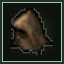
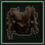
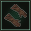
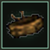
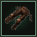
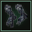
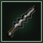
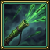
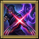

Character & Resource Profile _E / dx[115]
8 Starter Skills & Template WE / hE & FE (100%)
Legacy Template Weights (FE = 100% Sum)
Interactive Tokuno Paperdoll & Armory yE / mx · Hover or Click Gear

Helm
Chest
Gloves

Waist
Legs
Boots Primary
Primary
 Twin
Twin
 Ranged
Ranged

VenomRaw Bundle Starter Layer IDs (kitTokens: ["ninjaSet", "kryss", "bandages", "potionsMelee", "robeCloak"])
Unified L1–L60 [Arvore Progression & Ability Cards (12 Milestones) gE.ninja & b Catalog · Click any card or expand ▸ Schema


ninja_shadowjump
Melt into the seams of twilight and reappear behind your prey between heartbeats. Innate Ninjitsu shadow-step footwork and high-speed Fencing auto-attack mastery with Kryss, Tekagi, Kama, and Sai that primes stealth openers on each new target.
Engine Schema & Mode A/B Spec (ninja_shadowjump · spellId: 506 · gump 21286)
ninja_focus
Condense all of your Ninjitsu ki into the needle-point of a shieldless blade. Strikes for 1.15x-1.25x Ninjitsu damage (1 + Ninjitsu^2/43,636), amplifies weapon proc properties, and staggers the target's radial nerves for 3s.
Engine Schema & Mode A/B Spec (ninja_focus · spellId: 500 · gump 21280)
ninja_mirror
Weave a living illusion of smoke and moonlight that mimics your every stance. Summons an ablative shadow clone reducing damage taken by 8% for 6s in Mode A and intercepting incoming melee blows (Ninjitsu / 150 chance) in Mode B.
Engine Schema & Mode A/B Spec (ninja_mirror · spellId: 507 · gump 21287)
ninja_backstab
Lunge from the blind spot where armor plates meet, driving steel deep into vital arteries. Delivers a 1.15x-1.25x Ninjitsu ambush strike (scaled by Hiding and Stealth) and opens a 5s Shadow Ambush window (+6% all damage dealt).
Engine Schema & Mode A/B Spec (ninja_backstab · spellId: 504 · gump 21284)
ninja_death
Strike the forbidden dim-mak meridian—the victim feels only a chill until their heart falters five beats later. Plants a lethal Ninjitsu Death Mark that ticks over 4s of internal trauma in Mode A or detonates for massive unmitigated damage on your 5th swing in Mode B.
Engine Schema & Mode A/B Spec (ninja_death · spellId: 501 · gump 21281)
ninja_animal_form
Invoke the primal totems of Tokuno's mist-shrouded forests without sheathing your blades. Channels the Kitsune & Grey Wolf Predator Aspect for 8s: grants +10% Attack Speed, +3% Evasion instinct, and unleashes a Fox-Fire Spirit Claw on every 3rd Fencing swing.
Engine Schema & Mode A/B Spec (ninja_animal_form · spellId: 502 · gump 21282)
ninja_infectious_strike
Draw the wavy serpentine edge of your Kryss across a hidden reservoir of nightshade and sea-serpent bile. Inflicts 0.90x-1.00x Fencing damage and injects a virulent 3-tick assassin venom over 6s with zero potion consumption.
Engine Schema & Mode A/B Spec (ninja_infectious_strike · weaponRef: 11 · gump 20999)
ninja_smoke_bomb
Shatter a lacquered Tokuno flash-sphere at your feet, vanishing in a choking cloud of sulfur and ash. Triggers a 6s Vanish & Volley stealth veil (-8% damage taken), refreshes Stealth opener empowerment, and unlocks Shuriken & Fukiya volleys.
Engine Schema & Mode A/B Spec (ninja_smoke_bomb · itemId: 10248 · gump 10248)
ninja_ki_attack
Compress wind and shadow beneath your Tabi boots, vaulting across the battlefield in a single blurred flash. Closes the gap for 0.95x-1.05x Ninjitsu damage and releases an 85% kinetic ki shockwave onto an adjacent enemy.
Engine Schema & Mode A/B Spec (ninja_ki_attack · spellId: 503 · gump 21283)
ninja_surprise_attack
Strike from the smoke veil at the exact instant the enemy turns their head, shattering their defensive posture. Shreds target physical defense by -8% (and -16 to -25 Defense Chance) for 6s, leaving bosses wide open to Death Strike.
Engine Schema & Mode A/B Spec (ninja_surprise_attack · spellId: 505 · gump 21285)
ninja_fukiya_barrage
Unleash the full Tokuno shinobi arsenal: a blinding Egg Bomb (itemId: 10249) flash-cloud paired with a rapid Fukiya blowgun (itemId: 10154) poison-dart barrage. Grants -10% damage taken, +8% damage dealt, and an ablative decoy clone for 7s.
Engine Schema & Mode A/B Spec (ninja_fukiya_barrage · spellId: 507 · gump 10154)
ninja_twin_shadow
Forbidden Grandmaster Kage Bunshin assassination art: two living shadow clones converge from opposite blind spots to sever the target's lifeline. Deals 1.25x-1.35x damage (1.95x execute below 35% HP) and plants a 4-tick / 5-swing Twin Shadow Mark.
Engine Schema & Mode A/B Spec (ninja_twin_shadow · spellId: 501 · gump 21281)
Active Ability Deep-Dive Inspector Mode A (100% Existing Engine)
ninja_shadowjump
Melt into the seams of twilight and reappear behind your prey between heartbeats. Innate Ninjitsu shadow-step footwork and high-speed Fencing auto-attack mastery with Kryss, Tekagi, Kama, and Sai that primes stealth openers on each new target.
View Live Drop-In JSON Payload (design/drop-in/ninja.json)
{
"id": "ninja_shadowjump",
"aliasOf": null,
"name": "Shadowjump",
"namePtBr": "Salto das Sombras",
"category": "ninja",
"kind": "Passive",
"tab": "ability",
"cooldownMs": 0,
"customCooldownMs": 0,
"manaCost": 0,
"staminaCost": 0,
"goldCost": 0,
"reagentsRequired": false,
"effectType": "direct_damage",
"statusEffect": null,
"weaponAbilityRef": null,
"spellId": 506,
"itemId": null,
"mapScope": "UO",
"gumpIcon": 21286,
"iconKey": "gump_21286",
"scalingFormula": {
"summary": "UO Shadowjump (ref 506): innate shadow-step positioning and 100% Fencing/Ninjitsu auto-attack loop",
"stat": "ninjitsu",
"minMultiplier": 1,
"maxMultiplier": 1
},
"unlockLevel": 75,
"progressionTreeLevel": 1,
"inCatalog": true
}
5-Slot Seeded Hotbar Queue mE / gh · ro(e) Priority
Class Mastery & Passive Seals Oil-Painted 64×64 Gump Badges
ninja_way_of_stealthninja_shadow_disciplineninja_lethal_toxinsninja_master_assassin